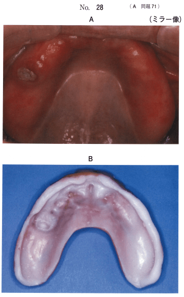

新義歯の装着によって、一時的な唾液分泌量の増加、異物感、発語障害、嘔吐反射などの不都合を生じることがある。義歯に慣れるには、通常1か月程度が必要であることを説明する。
咀嚼や構音など、口腔機能の回復・改善にはある程度の慣れと訓練が必要。口腔筋機能療法（MFT）、咀嚼訓練、栄養と食事形態の指導を実施する。
義歯性口内炎の起因菌であるCandida albicansは機械的清掃では完全には除去されないため、義歯洗浄剤による化学的清掃の併用が不可欠。
| 種類 | 特徴 |
|---|---|
| 過酸化物系 | 最も広く使用されている |
| 次亜塩素酸塩系 | 漂白作用が強い |
| 酵素系 | 長期使用に適している |
一般的には、睡眠中は義歯を外しておくように指導する。義歯床下粘膜の安静化と化学的清掃の時間確保が目的。義歯を外す場合は、乾燥による変形を防止するため、義歯洗浄剤を入れた水中に保管する。
注意：「唾液の分泌促進」は義歯装着の目的ではない。
顎堤吸収や人工歯の咬耗は、義歯使用において不可避な経時的変化である。これらの変化に伴い、義歯に不適合が生じ、フラビーガム、義歯性線維腫、義歯性口内炎などが発症する。無症状であっても定期的なリコールと調整が必要であることを理解させる。
就寝時に義歯装着を推奨する場合の目的はどれか。すべて選べ。
【解説】就寝時に義歯装着を推奨するのは、顎関節症患者や下顎位が不安定な患者の場合。残存歯の保護や動揺歯のスプリンティングも目的となる。唾液の分泌促進は義歯装着の目的ではない。
78歳の女性。上顎全部床義歯が外れやすいことを主訴として来院した。使用中の義歯は3年前に製作したという。診察の結果、義歯床粘膜面に粘膜調整材で裏装したところ、義歯の維持は向上した。初診時の口腔内写真（別冊No.28A）と粘膜調整材で裏装した義歯床粘膜面の写真（別冊No.28B）を別に示す。
患者への説明で適切なのはどれか。3つ選べ。

【解説】粘膜調整材で裏装した義歯の取り扱い：①夜は外す、②毎日義歯洗浄剤に浸ける、③ペースト状の義歯安定剤は使用しない。硬めのブラシでの清掃は粘膜調整材が剥がれるため不適切。3か月後ではなく、より早期の再来院が必要。